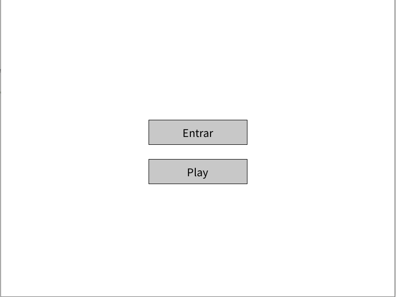
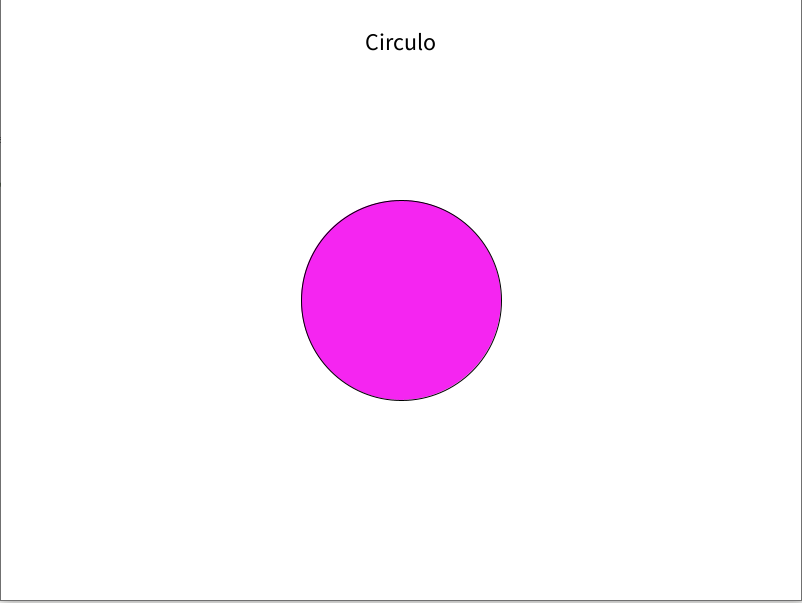
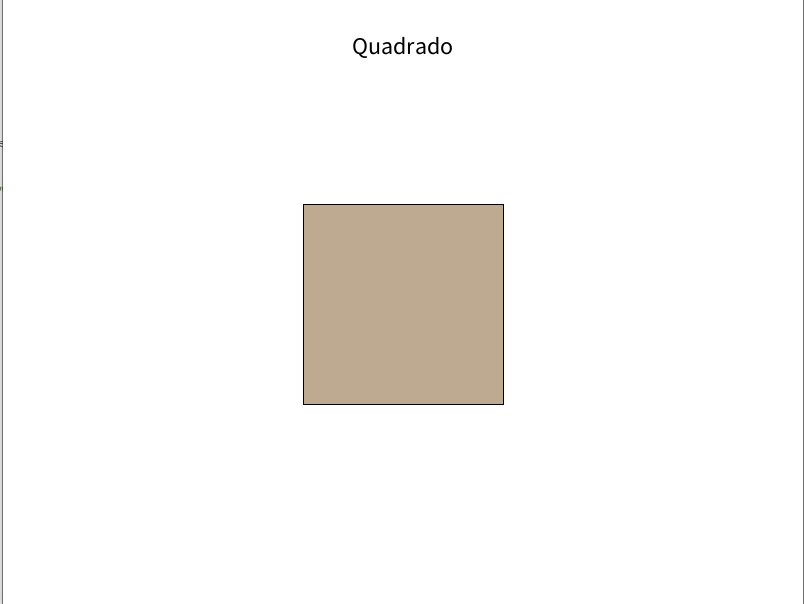
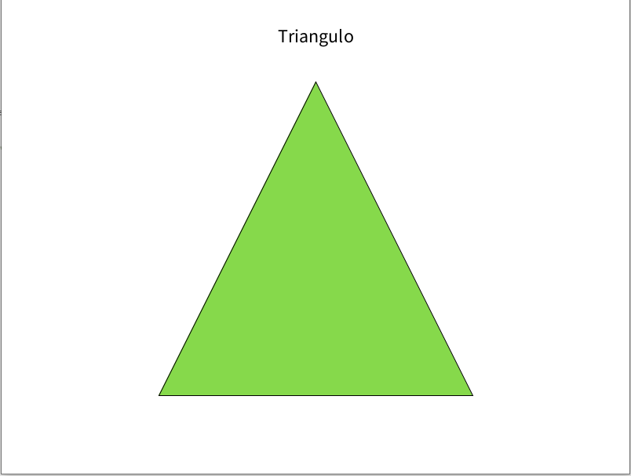

Por fim, o último trabalho, onde eu e meu grupo criamos um aplicativo interativo voltado para crianças, com o objetivo de ensinar de forma divertida e envolvente sobre objetos geométricos.
O nosso aplicativo foi cuidadosamente projetado para despertar o interesse das crianças pelo mundo da geometria. Com uma interface amigável e colorida, oferecemos uma experiência interativa que permite às crianças explorar diferentes objetos geométricos de forma intuitiva.
tudo foi desenvolvido no framework Processing, utilizando a linguagem Java orientada a objetos.
interface simples de fácil entendimento
  ALgumas formas das várias disponíveis no aplicativo, vale destacar que elas também emitem som com seu respectivo nome
Nosso objetivo é proporcionar às crianças uma experiência de aprendizado única, estimulante e interativa, que as inspire a explorar o fascinante mundo da geometria. Acreditamos que o conhecimento de objetos geométricos é fundamental para o desenvolvimento cognitivo das crianças e para a compreensão do mundo que as rodeia.